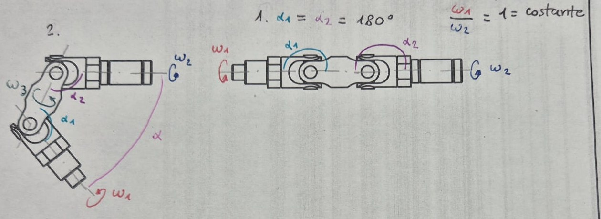

Caricamento del modello 3D…
Trascina l'albero d'ingresso (ω₁) per farlo girare · trascina altrove per ruotare la vista
Trascina il quadrante d'ingresso e cambia l'angolo tra gli alberi.
Pagina di Giada Misslin
Tutto il meccanismo, in un colpo d'occhio.
Si illumina nell'animazione qui sopra.
Con un solo giunto l'uscita accelera e rallenta due volte per giro: guarda l'ago arancione che anticipa e ritarda. Con due giunti uguali e in fase le irregolarità si annullano.
β è l'angolo tra gli alberi. La velocità dell'uscita oscilla tra cos β e 1/cos β volte quella d'ingresso: a 30° tra 0,87 e 1,15, cioè ±15%. Per questo i giunti si montano a coppie.
Scorri di lato →
Il meccanismo costruito per l'Open Day.

Il modello è un doppio giunto cardanico: albero d'ingresso, albero intermedio corto e albero d'uscita, collegati da due crociere. Il foglio di progetto studia due casi: alberi allineati (α₁ = α₂ = 180°) e alberi piegati (α₁ = α₂ = 115°, quindi ogni giunto devia di 65°). Il modello 3D è ricostruito da questo schizzo.
Con un solo giunto inclinato di 30°, l'albero condotto…
Open Day · Scuola d'arti e mestieri Bellinzona
← Tutti i meccanismi